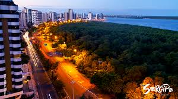

Sergipe é o menor estado do Brasil, localizado na região Nordeste. Sua capital, Aracaju, é conhecida por suas belas praias e infraestrutura moderna. O estado destaca-se pela culinária típica, com pratos como o caranguejo e a moqueca sergipana, e por manifestações culturais como o Forró e as festas juninas, especialmente o Arraiá do Povo. Em 2024, Sergipe foi o terceiro estado do Brasil com o melhor desempenho no setor de turismo, registrando um crescimento de 9% e movimentando mais de R$ 560 milhões na economia local. Além disso, Sergipe se destaca na geração de empregos, com um crescimento de 33% no número de postos de trabalho em 2024, comparado a 2022.
 Voltar